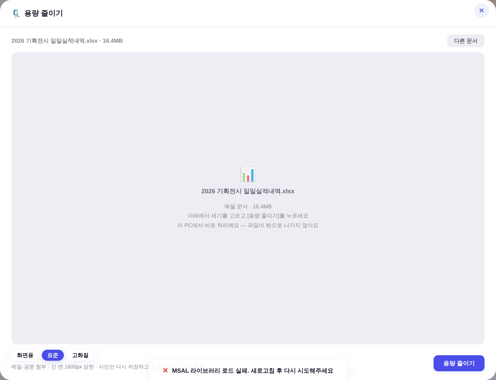
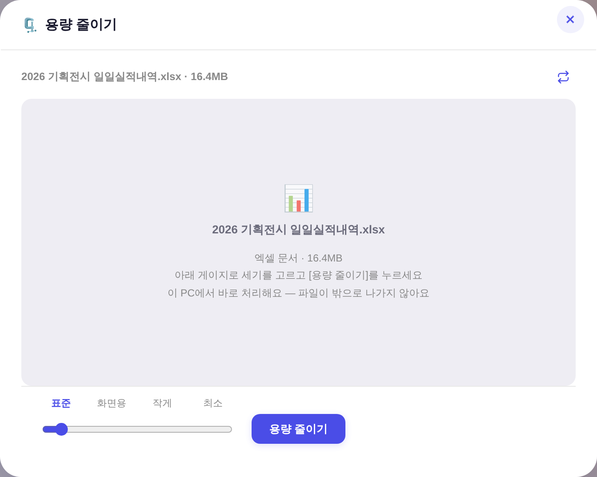
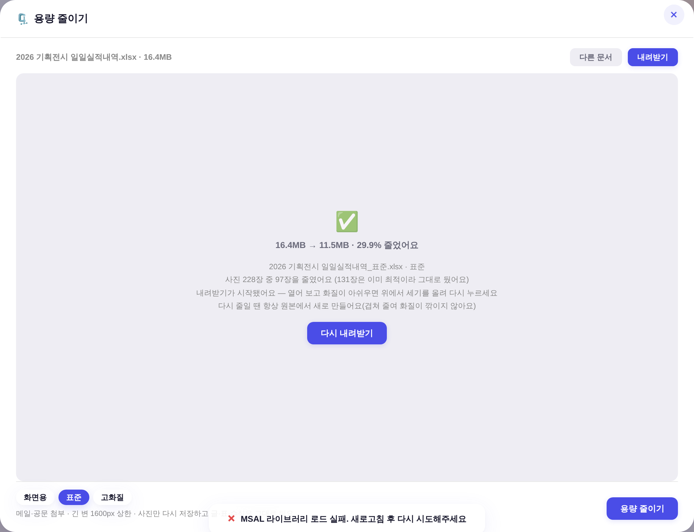
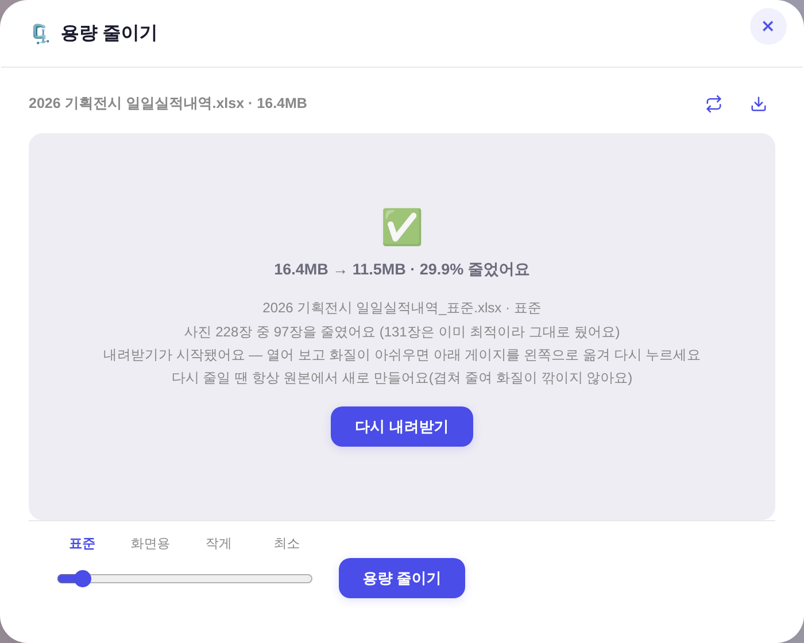
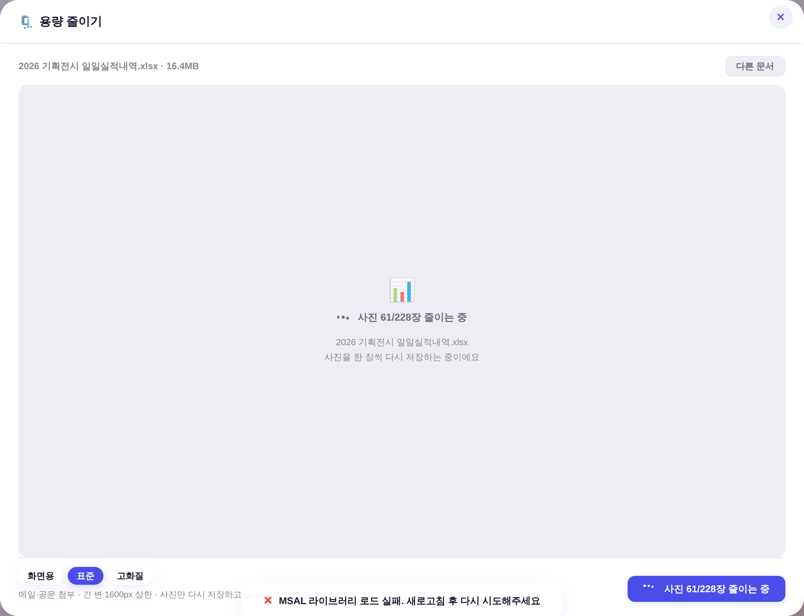
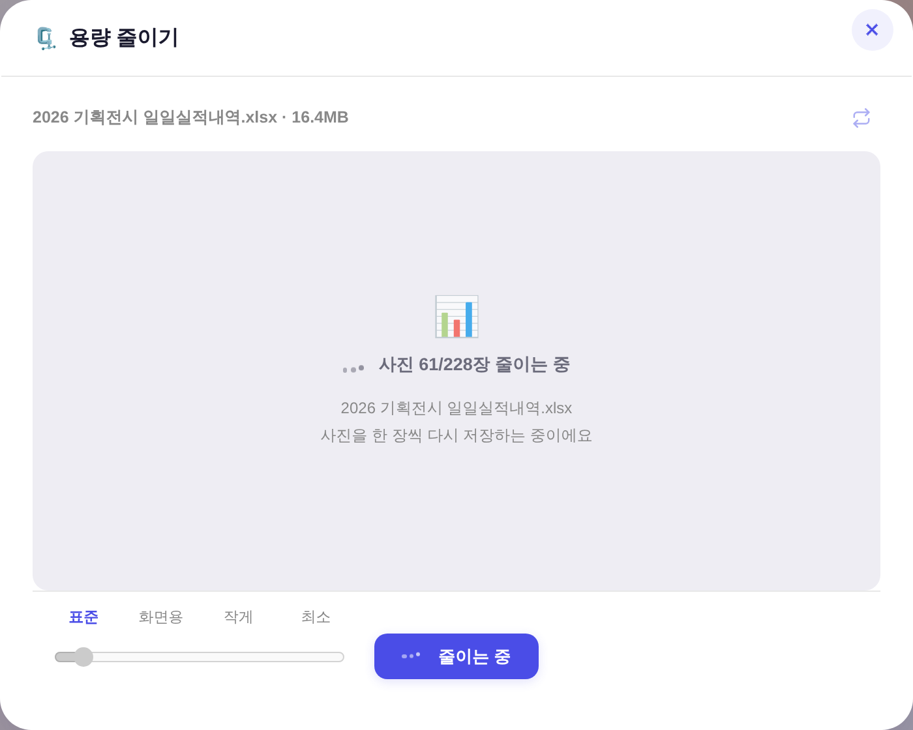
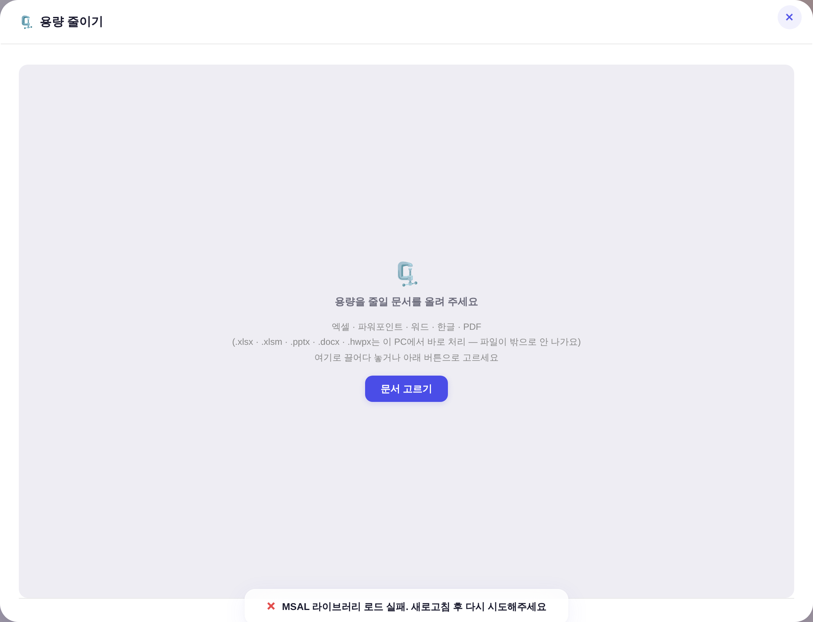

260805 운영자 지시 5건: ① 화면용 아래로 더 줄이기 ② 고화질 폐지 ③ 칩 → 게이지 + 눈금 라벨(아래 설명글 삭제)
④ [용량 줄이기] 버튼과 광학 잉크 수평 ⑤ 버튼을 창 한가운데로 · 다른 문서 = 교체 픽토그램 · 내려받기 = 다운로드 픽토그램 · 창 축소.
실측 환경 = 크로미움 헤드리스 1440×900 · 스샷 2배율 · 창 캡처.
① 문서를 올린 상태 — 세기 고르는 자리
전 — 칩 3개(화면용·표준·고화질) 좌하단 + 설명 한 줄 · 버튼은 우하단 구석 · 창 1080×828

후 — 게이지 4단(표준·화면용·작게·최소) + 눈금 라벨 · 버튼이 창 정가운데 · 창 700×560

② 줄인 뒤 결과
전 — 상단 바 = [다른 문서][내려받기] 글자 버튼

후 — 상단 바 = 교체·다운로드 픽토그램(정본 .cm-tool)

③ 줄이는 중
전 — 버튼 안에 「사진 61/228장 줄이는 중」(장수마다 버튼 폭이 흔들림)

후 — 상세 진행은 무대 한가운데 · 버튼은 짧은 고정 라벨이라 폭 불변

④ 문서를 올리기 전(빈 상태)
전 — 창 1080×828

후 — 창 700×560
세기 사다리 — 실측(같은 문서 3.63MB · 사진 228장)
세기
긴 변
JPEG 품질
결과
줄어든 비율
실제로 줄인 사진
표준
1600px
0.82
3.60MB
0.7%
0 / 228
화면용
1200px
0.75
3.60MB
0.7%
0 / 228
작게 (신설)
900px
0.68
3.59MB
1.1%
4 / 228
최소 (신설)
640px
0.58
2.62MB
27.7%
209 / 228
이 문서는 사진이 이미 작아 화면용까지는 한 장도 안 줄었다(0.7% = 다시 압축한 몫). 최소에서 209장이 줄어 27.7% 빠졌다 — 「화면용 이하」가 필요했다는 실증.
고화질(2400px·0.88)은 폐지 — 원본보다 크거나 같아 「절대 안 키운다」 규칙에 걸려 전량 무접촉이 되던 세기다(용량 줄이기 화면에서 의미 0).
재압축은 항상 원본 기준이라 세기를 바꿔 다시 눌러도 겹쳐 줄지 않는다(기존 계약 유지).
기하 실측 — ④ 광학 잉크 수평 · ⑤ 가운데
계약
실측
[용량 줄이기] 버튼 중심 ↔ 창 중심
Δ 0.00px
게이지 레일 잉크 중심 ↔ 버튼 중심(수평선)
Δ 0.00px
눈금 라벨 4개 중심 ↔ 손잡이 4위치 중심
Δ 0.00 / 0.00 / −0.02 / 0.00px
손잡이는 레일 양끝에서 23px(= .modal input 패딩 14 + 테두리 1.5 + 손잡이 반지름 6 + 트랙 내부 여백)만큼 안쪽까지만 움직인다 — 라벨 띠를 같은 값만큼 좁혀 i/(n-1)로 절대배치했다. PNG 픽셀 디코딩으로 손잡이 중심을 직접 재서 얻은 값.
레일을 끌 때 화면 전체를 다시 그리면 끌던 요소가 교체돼 드래그가 끊긴다 — 그래서 세기 변경은 눈금·상단 바·무대만 갱신한다. 헤드리스 드래그 실측 = 왼쪽 끝→오른쪽 끝 한 번에 최소까지 도달, 레일 요소 동일성 유지.
쓴 부품 — 신규 CSS·신규 색 0
게이지 = .ve-range + 눈금 라벨 .ve-val (영상 편집기·카드 제작 슬라이더 그대로)
상단 바 아이콘 = .cm-tool + _CM_ICO.swap (카드 제작 「사진 교체」와 같은 뜻·같은 그림) · 다운로드 그림만 같은 작도 규칙(feather · viewBox 24 · stroke 2)으로 1개 추가
게이트 = tools/check_design.py ✓ raw hex 1578/1578 무변 · :root 2/0 · 신규 토큰 0